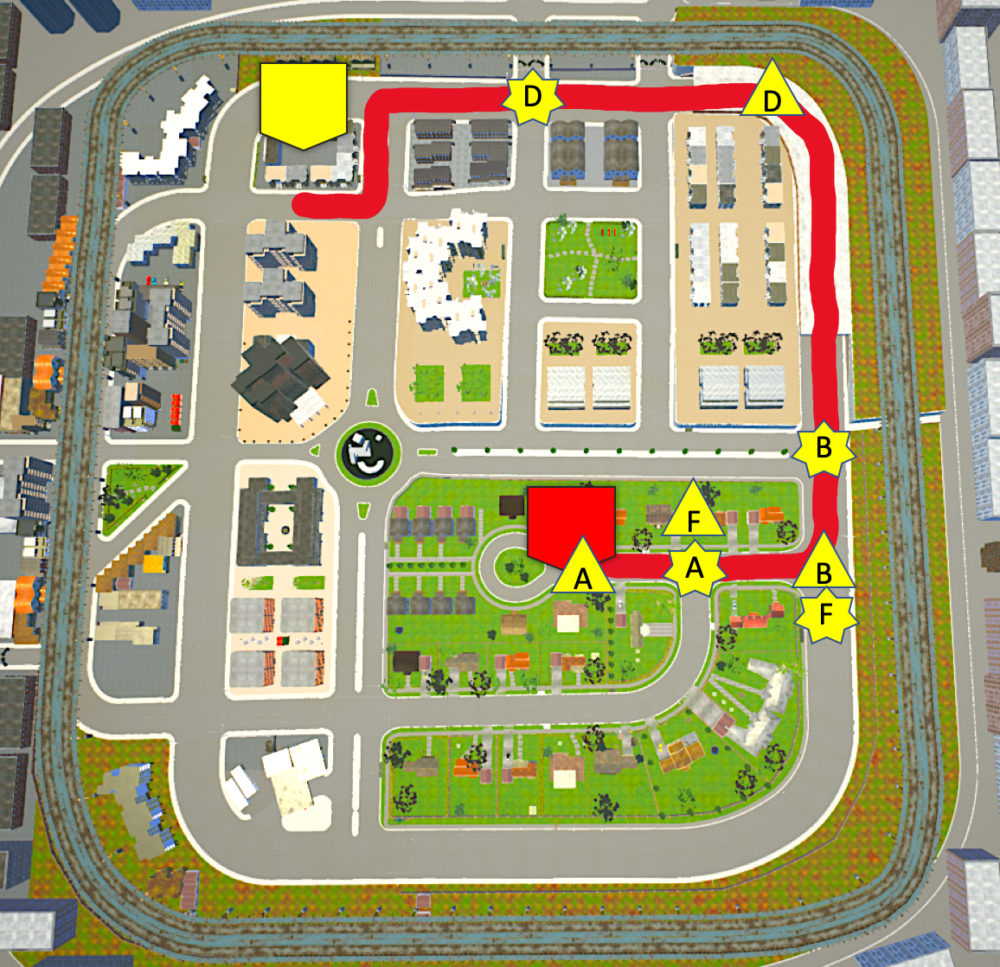
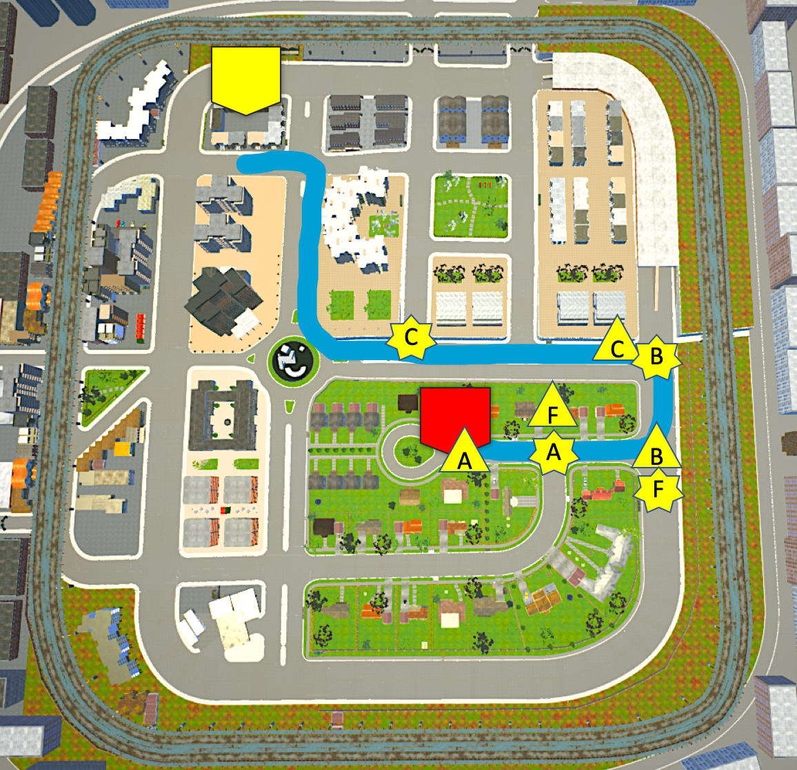
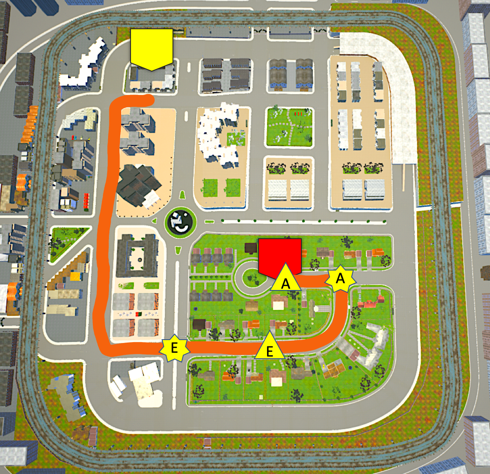
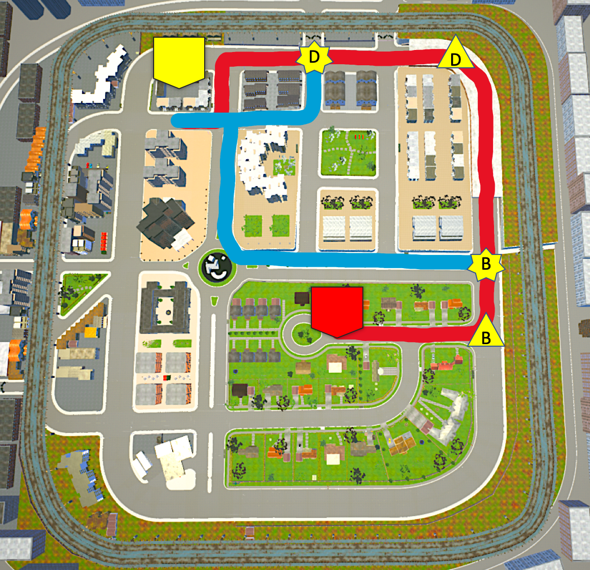
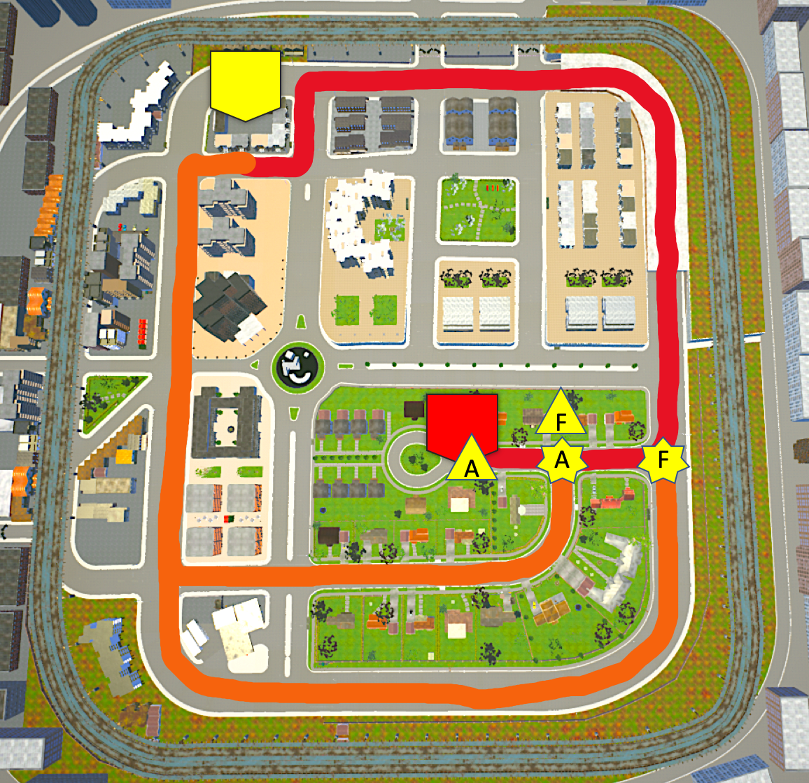
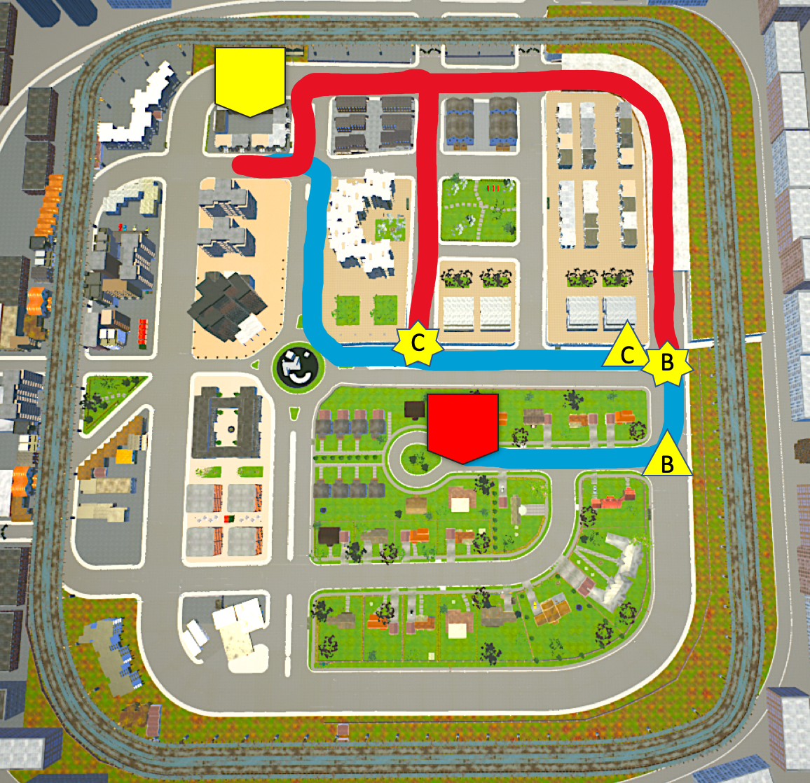
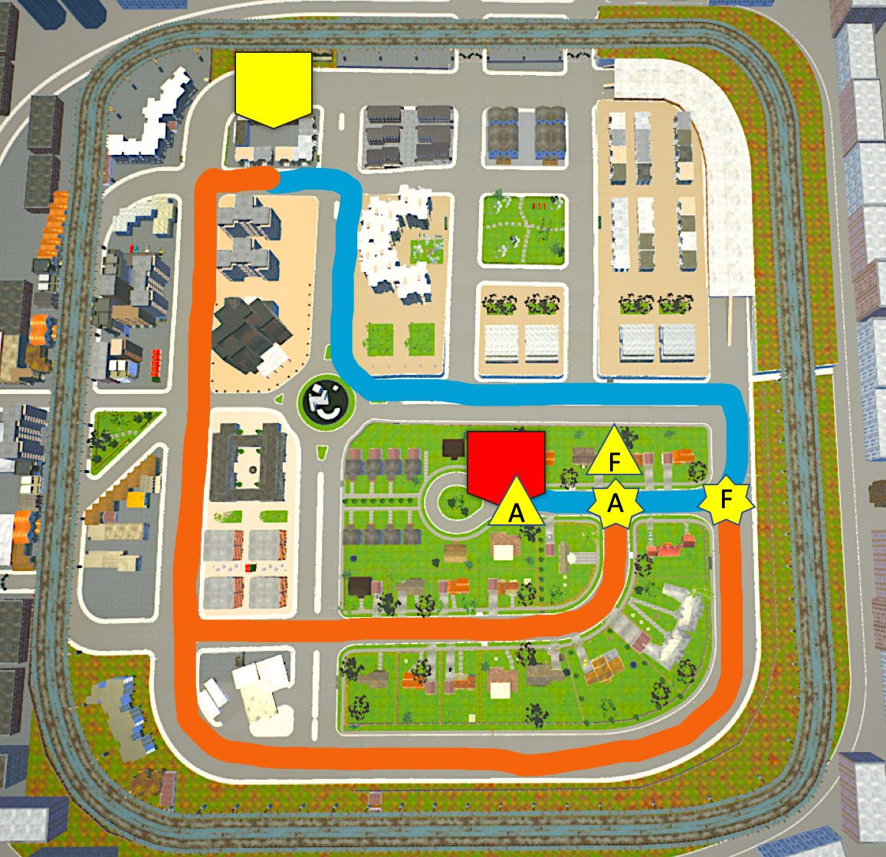
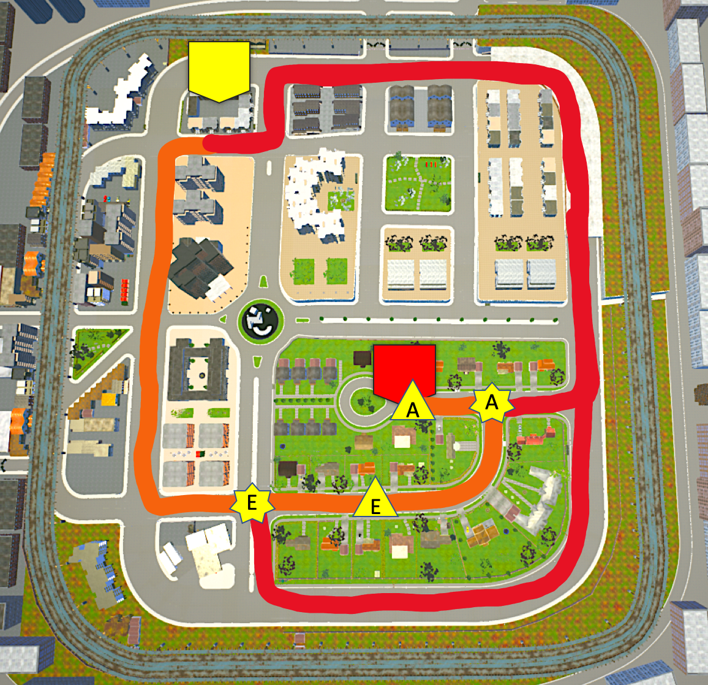

Let's get started!In 500 meters, turn left.Go straight.In 500 meters, turn left and then turn right.You've arrived at your destination.
Pure Driver Model
Let's get started!Let's turn left after 500 meters. We take that direction on most days.Let's continue straight. We always go through the tunnel.Let's turn left after 500 meters and then turn right. We usually take that turn near our destination.We've arrived at our destination.

Pure Optimal
Let's get started!Let's turn left after 500 meters.We can turn left again in 300 meters. It will take us faster.Let's go straight to the roundabout and take the first exit. There are less traffic signals to wait for.Let's turn left after 500 meters.We've arrived at our destination.

Pure Explorer
Let's get started!Let's turn right. I think we haven't gone in this direction before.Let's turn right in 500 meters. We should see a new part of town there.Let's turn right after 500 meters to our destination.We've arrived at our destination.

Driver + Optimal Conversation #1
Decision Point B
Driver: Let's get started!Driver: Let's turn left after 500 meters. We take that direction on most days.
Driver: Let's continue straight. Optimal: We can also turn left before the tunnel. Driver: But we always go through the tunnel.Optimal: Yes, but turning left will take us faster.
Driver: Let's turn left after 500 meters and then turn right. We usually take that turn near our destination.Driver: We've arrived at our destination.Optimal: Let's go straight to the roundabout and take the first exit. There are less traffic signals to wait for.Optimal: Let's turn left after 500 meters.Optimal: We've arrived at our destination.
Driver + Optimal Conversation #2
Decision Point D
Driver: Let's get started!Driver: Let's turn left after 500 meters. We take that direction on most days.Driver: Let's continue straight. We always go through the tunnel.
Driver: Let's continue straight and then turn left. Optimal: Or in 500 meters, we can immediately turn left and then turn right. Driver: We regularly go straight near our destination.Optimal: After we turn right, we just go straight as well.
Driver: Let's turn right.Driver: We've arrived at our destination.Optimal: We've arrived at our destination.

Driver + Explorer Conversation #1
Decision Point A
Driver: Let's get started!
Driver: Let's go straight and then turn left. Explorer: How about turning right before that? Driver: That's possible. But we take a left on most days.Explorer: That's true. But we haven't gone in this direction before.
Driver: Let's continue straight. We always go through the tunnel.Driver: Let's turn left after 500 meters and then turn right. We usually take that turn near our destination.Driver: We've arrived at our destination.Explorer: Let's turn right in 500 meters. We should see a new part of town there.Explorer: Let's turn right after 500 meters to our destination.Explorer: We've arrived at our destination.
Driver + Explorer Conversation #2
Decision Point F
Driver: Let's get started!
Driver: Let's turn left after 500 meters. Explorer: How about making a right turn instead?Driver: I don't know. We usually turn left and take the tunnel.Explorer: Don't you want to see another part of town first? We haven't seen it yet!
Driver: Let's continue straight. We always go through the tunnel.Driver: Let's turn left after 500 meters and then turn right. We usually take that turn near our destination.Driver: We've arrived at our destination.Explorer: Let's go straight to the other side of town.Explorer: Let's turn right after 500 meters to our destination.Explorer: We've arrived at our destination.

Optimal + Driver Conversation #1
Decision Point B
Optimal: Let's get started!Optimal: Let's turn left after 500 meters.
Optimal: Let's turn left again in 300 meters.Driver: How about we continue straight?Optimal: Turning left will take us there faster.Driver: Right. But don't we always go through the tunnel?
Optimal: Let's go straight to the roundabout and take the first exit. There are less traffic signals to wait for.Optimal: Let's turn left after 500 meters.Optimal: We've arrived at our destination.Driver: Let's turn left after 500 meters and then turn right. We usually take that turn near our destination.Driver: We've arrived at our destination.
Optimal + Driver Conversation #2
Decision Point C
Optimal: Let's get started!Optimal: Let's turn left after 500 meters.Optimal: We can turn left again in 300 meters. It will take us faster.
Optimal: Let's go straight to the roundabout and take the first exit. Driver: Why don't we turn right in 500 meters?Optimal: If we use the roundabout, there will be less traffic signals to wait for.Driver: Right. But turning right will take us back to our regular route.
Optimal: Let's turn left after 500 meters.Optimal: We've arrived at our destination.Driver: Let's turn left after 500 meters.Driver: Let's make another left and then turn right. Driver: We've arrived at our destination.

Optimal + Explorer Conversation #1
Decision Point A
Optimal: Let's get started!
Optimal: Let's go straight and then turn left.Explorer: How about turning right before that?Optimal: I don't know about that. Going straight then left is a closer route.Explorer: That's true. But we haven't gone in this direction before.
Optimal: We can turn left again in 300 meters. It will take us faster.Optimal: Let's go straight to the roundabout and take the first exit. There are less traffic signals to wait for.Optimal: Let's turn left after 500 meters.Optimal: We've arrived at our destination.Explorer: Let's turn right in 500 meters. We should see a new part of town there.Explorer: Let's turn right after 500 meters to our destination.Explorer: We've arrived at our destination.
Optimal + Explorer Conversation #2
Decision Point F
Optimal: Let's get started!
Optimal: Let's turn left after 500 meters. Explorer: How about making a right turn instead?Optimal: Are you sure? Turning left will take us faster.Explorer: Don't you want to see another part of town first? We haven't seen it yet!
Optimal: Let's turn left again.Optimal: Let's go straight to the roundabout and take the first exit. There are less traffic signals to wait for.Optimal: Let's turn left after 500 meters.Optimal: We've arrived at our destination.Explorer: Let's go straight to the other side of town.Explorer: Let's turn right after 500 meters to our destination.Explorer: We've arrived at our destination.

Explorer + Driver Conversation #1
Decision Point A
Explorer: Let's get started!
Explorer: Let's turn right. Driver: Why don't we go straight then turn left?Explorer: We can but I think we haven't gone in this direction before.Driver: That's true. Although we take a left on most days.
Explorer: Let's turn right in 500 meters. We should see a new part of town there.Explorer: Let's turn right after 500 meters to our destination.Explorer: We've arrived at our destination.Driver: Let's continue straight. We always go through the tunnel.Driver: Let's turn left after 500 meters and then turn right. We usually take that turn near our destination.Driver: We've arrived at our destination.
Explorer + Driver Conversation #2
Decision Point E
Explorer: Let's get started!Explorer: Let's turn right. I think we haven't gone in this direction before.
Explorer: Let's go straight and then turn right.Driver: How about we turn left before that?Explorer: We should see a new part of town if we go straight.Driver: Right. Although turning left will lead us back to the tunnel we always take.
Explorer: Let's turn right after 500 meters to our destination.Explorer: We've arrived at our destination.Driver: Let's continue straight through the tunnel.Driver: Let's turn left after 500 meters and then turn right. We usually take that turn near our destination.Driver: We've arrived at our destination.

Explorer + Optimal Conversation #1
Decision Point A
Explorer: Let's get started!
Explorer: Let's turn right. Optimal: Why don't we go straight then turn left?Explorer: We can but I think we haven't gone in this direction before.Optimal: That's true. Although going straight will be faster.
Explorer: Let's turn right in 500 meters. We should see a new part of town there.Explorer: Let's turn right after 500 meters to our destination.Explorer: We've arrived at our destination.Optimal: Let's turn left again. Optimal: Let's go straight to the roundabout and take the first exit. There are less traffic signals to wait for.Optimal: Let's turn left after 500 meters.Optimal: We've arrived at our destination.
Explorer + Optimal Conversation #2
Decision Point E
Explorer: Let's get started!Explorer: Let's turn right. I think we haven't gone in this direction before.
Explorer: Let's go straight and then turn right.Optimal: How about we immediately turn right?Explorer: We should see a new part of town if we go straight.Optimal: Is that so? Although turning right will take us closer.
Explorer: Let's turn right after 500 meters to our destination.Explorer: We've arrived at our destination.Optimal: Let's go straight to the roundabout and take the second exit. Optimal: Let's turn left after 500 meters.Optimal: We've arrived at our destination.